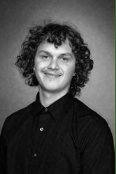

Sveiki visi, mano vardas Matas Backevičius, man 25 metai. Aš gimiau Lietuvoje. Šiuo metu gyvenu Orange, CA. Aš siekiu informacinių technologijų bakalauro, daugiausia dėmesio skiriant programavimui. Mano ilgalaikis tikslas yra dirbti programinės įrangos inžinerijos srityje. Programavimas yra mano aistra. Galų gale manau, kad problemų sprendimas yra labai įdomus. Tobulėti galima įvairiais būdais, todėl kasdien stengiuosi visomis jėgomis stengtis ir tapti geresniu viskuo, ką darau, nepaisant to, ar tai programavimas, ar net namų užduotys.
Laisvalaikiu mėgstu banglenčių sportą. Manau, kad tai labai raminantis ir tikrai puikus būdas susikaupti, kad būtų geriau patobulinta. Kitas mano pomėgis yra muzika. Groju įvairiais mušamaisiais instrumentais, klasikiniais būgnais.
Sveikinu jus atvykusius savo svetainėje!